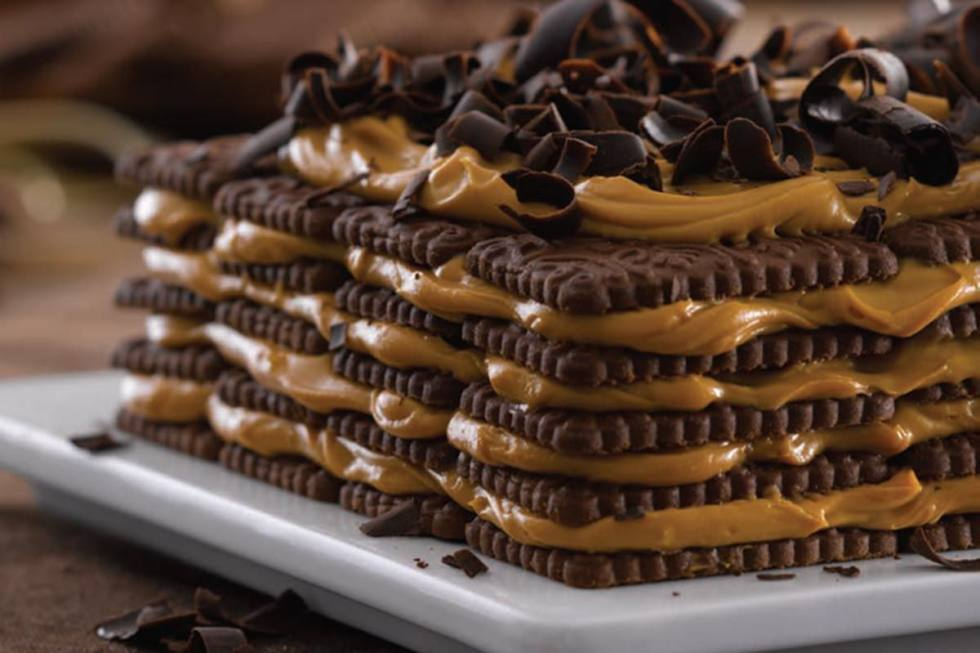

Como preparar una Chocotorta
Ingredientes.
- Dulce de leche 500 Gramos.
- Galletas de chocolate 500 Gramos.
- Leche 175 mililitros.
- Queso crema 500 Gramos.
- Espiral de ganache
- Chocolate cobertura negro picado 45 Gramos.
- Chocolate cobertura blanco picado 75 Gramos.
- Leche condensada azucarada 150 mililitros.
- Mantequilla 90 Gramos
Paso a paso
Batir el queso crema para ablandarlo, agregar el dulce de leche y batir bien hasta mezclar.
El Armado
- Remojar las galletitas en la leche y disponerlas en una capa en una fuente cuadrada de 20 cm.
- Con una cuchara, tomar 1/3 del relleno de dulce de leche y esparcirlo sobre las galletitas hasta cubrirlas.
- Repetir la operación dos veces más, alternando capas de galletas remojadas en leche con el relleno de dulce de leche.
- Llevar a la heladera mientras se prepara la cobertura.
- Pesar el chocolate negro en un bol y el chocolate blanco en otro.
- Añadir 45 gramos de manteca a cada bol.
- Derretir el chocolate con la manteca a baño maría, o en el microondas, revolviendo a menudo, hasta que esté suave.
- Verter 75 ml de la leche condensada en cada bol y batir hasta mezclar.
- Verter los dos chocolates sobre la chocotorta al mismo tiempo, o verterlos a cucharadas, alternando para que se vean tanto la cobertura blanca como la negra.
- Utilizar un palillo para brochette o un cuchillo de pelar para mezclar los chocolates formando una espiral.
- Llevar la chocotorta a la heladera durante al menos 2 horas antes de servirla, para que las galletitas se ablanden y la crema se vuelva firme.